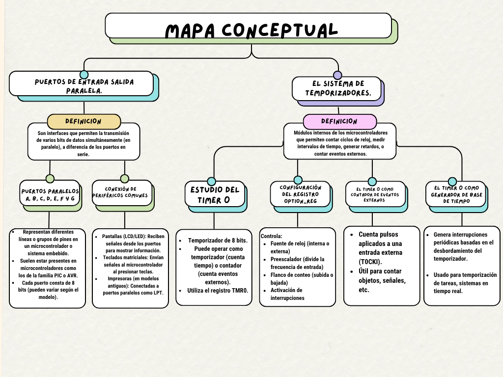
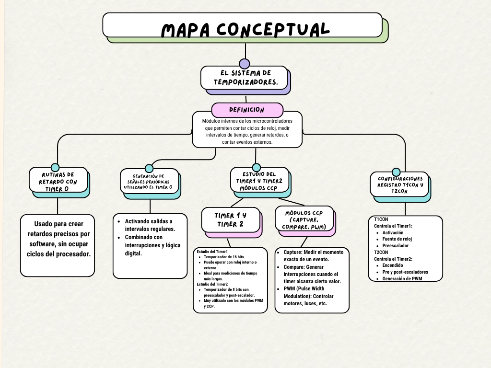
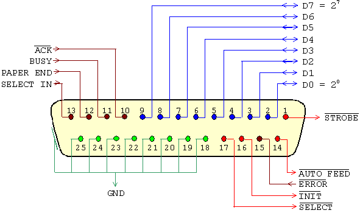

Puertos paralelos A, B, C, D, E, F y G. Conexión de periféricos comunes.
El sistema de temporizadores
Estudio del Timer 0, configuración del registro OPTION_REG, y más.
Código de Temporizadores
#include#define _XTAL_FREQ 4000000 // 4 MHz // CONFIG BITS #pragma config FOSC = XT, WDTE = OFF, PWRTE = ON, BOREN = ON #pragma config LVP = OFF, CPD = OFF, WRT = OFF, CP = OFF // Variables globales unsigned int contador_ms = 0; // Interrupción para Timer0 // [Código completo aquí]
Diferencias entre Puertos de E/S Paralelo y Serie
Puerto de E/S Paralelo
- Puerto de E/S Paralelo: Envía varios bits (normalmente 8 o más) al mismo tiempo, cada uno por una línea separada.
- Velocidad: Más rápido para distancias cortas porque transmite múltiples bits simultáneamente.
- Cableado: Más complejo y grueso, debido al mayor número de líneas necesarias.
- Ejemplo de uso:
- Impresoras antiguas con puerto paralelo (tipo Centronics o LPT).
- Comunicación entre componentes dentro de un computador, como el bus de datos.
- Cuándo usarlo: Cuando necesitas transmitir grandes cantidades de datos rápidamente y las distancias entre dispositivos son cortas (por ejemplo, dentro de una computadora o a una impresora local).
- Puerto de E/S Serie: Envía los bits uno tras otro a través de una sola línea de datos.
- Velocidad: Más lento para cortas distancias que el paralelo, pero más fiable en largas distancias.
- Cableado: Más simple y delgado, porque usa menos líneas.
- Ejemplo de uso:
- Comunicación por puerto RS-232, USB, UART, o comunicación entre microcontroladores.
- Dispositivos como ratones antiguos, módems, sensores, y tarjetas Arduino.
- Cuándo usarlo: Ideal cuando necesitas comunicación a larga distancia, o cuando solo se requiere una conexión simple y confiable (por ejemplo, para sensores en sistemas embebidos o comunicación con un microcontrolador).
Transmisión rápida de múltiples bits simultáneamente.
Puerto de E/S Serie
Envío de bits uno a uno, ideal para largas distancias.
Diagrama de un Puerto Paralelo
Funciones de las Líneas del Puerto Paralelo (Estándar)
- STROBE (Pin de Control - Salida del Host): Señal que el host (PC) envía para indicar que los datos en las líneas DATA0-DATA7 están listos para ser leídos.
- Cómo funciona: El host coloca los datos en las líneas de datos, luego pone la señal STROBE en bajo (0) por unos microsegundos para que el dispositivo lea los datos.
- Dirección: Salida del host hacia el periférico.
- ACK (Pin de Estado - Entrada al Host): Señal que el periférico (como una impresora) usa para confirmar que recibió correctamente los datos.
- Cómo funciona: Después de recibir y procesar los datos, el dispositivo pone esta línea brevemente en bajo (0) para informar que está listo para el siguiente byte.
- Dirección: Entrada al host (el host la lee).
- BUSY (Pin de Estado - Entrada al Host): Indica que el periférico está ocupado y no puede recibir más datos por el momento.
- Cómo funciona: Si está en alto (1), el dispositivo está ocupado. Si está en bajo (0), está listo para recibir datos.
- Dirección: Entrada al host.
- DATA0 – DATA7 (Líneas de Datos - Salida del Host): Transmiten los 8 bits de datos desde el host hacia el periférico.
- Cómo funciona: El host coloca un byte (8 bits) en estas líneas y luego activa STROBE para indicar que los datos están listos.
- Dirección: Salida del host hacia el periférico.